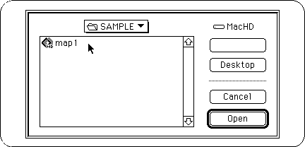
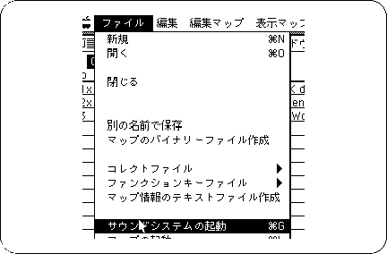
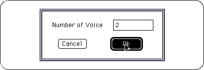
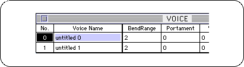
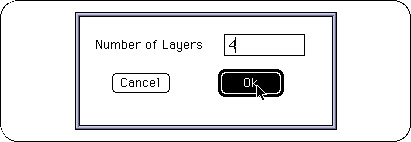
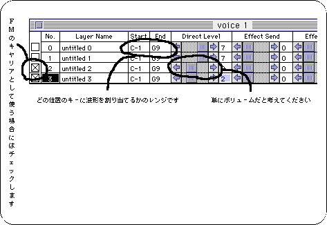
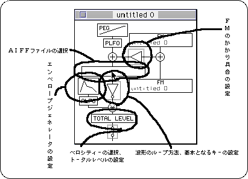
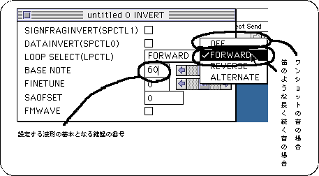
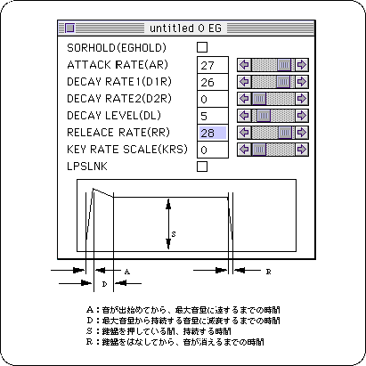
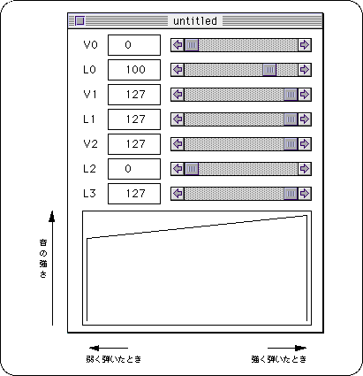

Return to previous page | Return to menu | Go to next page
Next, use the created waveform to actually assign sounds to the keyboard. At the same time, the key touch strength and sound change are set.
To use the Tone Editor, you need to initialize the target in the sound simulator.
Start the sound simulator and open the map.
The map that opens at this time can be the sample map file that comes with the Sega Sound Tool.

Next, select “Start Sound System” from the File menu. The sound system is activated.

This completes the initialization of the target.
Starts Tone Editor.
When creating a new voice, the default number of voices is 15. However, let's start with about two.
You can add or delete the number of voices later.
If you created sequence data first, set the number of instruments.

When you have completed the steps so far, the Voice window will appear.

There are numbers and names in this window.
Later, when setting in the pop-up menu, it is difficult to understand if the voice name is untitled.
Next, set each tone.
Double-click on the numbered part on the left. As with the number of voices, you will be asked for the number of layers.
The number of layers determines how many sound waveforms are assigned to a certain key range.
Originally, if you attach each waveform to each key, the sound should be exactly the same, but it will run out of memory.
Decreasing the size of the waveform without reducing the sound quality as much as possible and deciding the number of waveforms to use is a very difficult task, but it is the most important part, so try it out and try it many times.

Thelayer window appears.

Various settings are possible by double-clicking inside each frame.

If there is a change in the set AIFF file with the AIFF file selected, either select another AIFF file and select the file again, or change the file name. To select a file.
If you do not do this, you should be especially careful as the modified file will not be loaded into the tone editor.
Then, adjust the settings while checking the sound on the keyboard.
The most important settings are explained below.
In addition, each setting should be set with reference to what is included in the SEGA Sound Library.
If you want to know more details, please refer to the book about DTM.
● Waveform information setting
If you are using commercially available waveform editing software, be sure to check “Waveform Loop Method” and basic key settings.

*
● EG (Envelope Generator)
The sound of live musical instruments decays with time, and the timbre changes accordingly.
It is EG that sets such a temporal change.

Velocity
Velocity has 127 stages of accuracy at the speed of hitting the keyboard.
This will change the volume when you play strongly or softly.
Typical sound settings are as follows.
